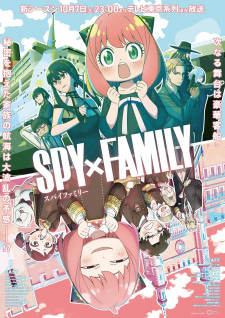
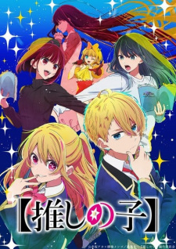

Naofumi Iwatani, um pouco carismático otaku que passa os seus dias em videojogos e manga, é subitamente invocado para um universo paralelo! Ele descobre que é um dos quatro heróis equipados com armas lendárias e que têm a tarefa de salvar o mundo da sua profetizada destruição.
Como o Shield Hero (Herói do Escudo), o mais fraco dos heróis, nem tudo é como parece. Naofumi rapidamente se encontra sozinho, na penúria e traído. Sem ninguém a quem recorrer e sem sítio para fugir, a única coisa que lhe resta é o seu escudo. Agora, Naofumi tem que se erguer para se tornar o lendário Shield Hero e salvar o mundo!

Spy x Family - Season 2
A história segue a vida de Twilight, um espião que precisa "formar uma família" de forma repentina para executar uma missão. A reviravolta se dá quando percebemos que a garota que ele adota como filha é uma paranormal capaz de ler mentes e a mulher com quem ele concorda em se casar para formar um falso casamento é uma assassina profissional. E a partir daí, acompanhamos essa história de comédia com essa família um tanto quanto diferente vivendo sem saber os segredos uns dos outros.

Oshi no Ko - Season 2
A história de Oshi no Ko acompanha, inicialmente, Gorou Honda, um ginecologista de um hospital na zona rural do Japão, que é um grande fã da idol Ai Hoshino. Ele fica perplexo quando a artista pausa a carreira, e mais ainda quando ela aparece em seu local de trabalho, grávida.
O médico passa a cuidar pessoalmente dos preparativos para o parto de Ai, mas o encontro com a garota acaba, por uma série de motivos, ocasionando seu assassinato. E tudo teria acabado por aí — caso Gorou não tivesse reencarnado como Aquamarine (ou apenas Aqua), um dos filhos da idol que mais amava.
Top Animes
Full Metal Alchemist
Depois que um terrível experimento de alquimia dá errado na casa dos Elric, os irmãos Edward e Alphonse são deixados em uma nova realidade catastrófica. Ignorando o princípio alquímico que proíbe a transmutação humana, os meninos tentaram trazer de volta à vida sua mãe recentemente falecida. Em vez disso, eles sofreram perdas pessoais brutais: o corpo de Alphonse se desintegrou enquanto Edward perdeu uma perna e depois sacrificou um braço para manter a alma de Alphonse no reino físico, amarrando-a a uma enorme armadura.
Os irmãos são resgatados pela vizinha Pinako Rockbell e sua neta Winry. Conhecido como um prodígio da engenharia biomecânica, Winry cria membros protéticos para Edward utilizando "automail", um metal resistente e versátil usado em robôs e armaduras de combate. Após anos de treinamento, os irmãos Elric partem em uma missão para restaurar seus corpos, localizando a Pedra Filosofal – uma joia poderosa que permite a um alquimista desafiar as leis tradicionais da Troca Equivalente.
À medida que Edward se torna um alquimista infame e ganha o apelido de “Fullmetal”, a jornada dos meninos os envolve em uma conspiração crescente que ameaça o destino do mundo.
Death Note
Assassinatos brutais, pequenos furtos e violência sem sentido poluem o mundo humano. Em contraste, o reino dos deuses da morte é um antro de jogos monótono e imutável. O engenhoso estudante japonês Light Yagami, de 17 anos, e o sádico deus da morte Ryuk compartilham uma crença: seus mundos estão podres.
Para sua própria diversão, Ryuk lança seu Death Note no mundo humano. A luz tropeça nele, considerando ridícula a primeira de suas regras: o humano cujo nome está escrito nesta nota morrerá. No entanto, a tentação é muito grande, e Light experimenta escrever o nome de um criminoso, o que decreta de forma perturbadora seu primeiro assassinato.
Ciente do terrível poder divino que caiu em suas mãos, Light – sob o pseudônimo de Kira – segue seu perverso senso de justiça com o objetivo final de limpar o mundo de todos os malfeitores. O meticuloso detetive L já está em seu encalço, mas como o brilhantismo de Light rivaliza com o de L, a grande perseguição por Kira se transforma em uma intensa batalha de inteligência que só pode terminar quando um deles estiver morto.
Attack On Titan
Attack on Titan se passa em um mundo onde a humanidade vive dentro de cidades cercadas por enormes Muralhas que os protegem dos Titãs, criaturas humanóides gigantes que devoram humanos aparentemente sem motivo. A história gira em torno de Eren Jaeger, sua irmã adotiva Mikasa Ackerman e seu amigo de infância Armin Arlert, cujas vidas mudam para sempre após o aparecimento de um Titã Colossal, que provoca a destruição de sua cidade natal e a morte da mãe de Eren. Jurando vingança e recuperar o mundo dos Titãs, Eren, Mikasa e Armin se juntam a Divisão de Reconhecimento, um grupo de elite de soldados que lutam contra Titãs fora das Muralhas.